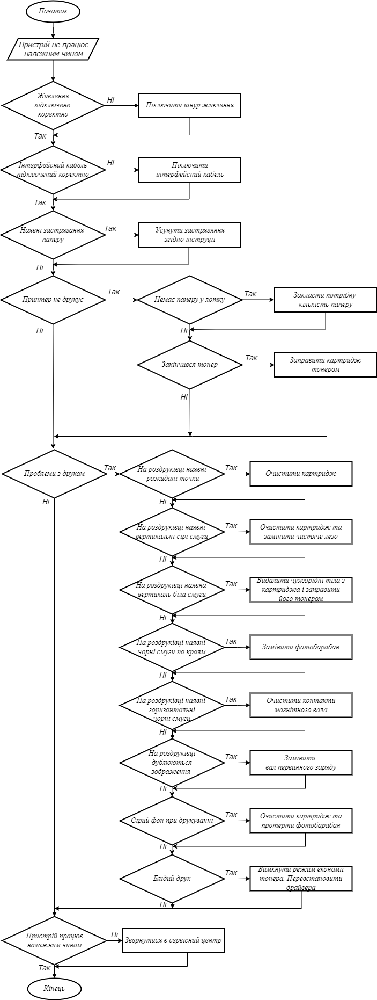

Технічне обслуговування принтера HP LaserJet 107a включає такі процедури:
- Очищення пристрою: видалення пилу, залишків тонеру та інших забруднень зовнішніх поверхонь принтера за допомогою м'якої тканини або антистатичної губки.
- Перевірка рівня тонеру: переконайтеся, що рівень тонеру в бункері вистачає для виконання друку. Якщо рівень тонеру низький, замініть картридж тонеру
- Очищення фотобарабана: використовуйте спеціальну губку або чисту, суху тканину для обережного видалення будь-яких залишків тонеру з фотобарабана.
- Перевірка паперу: переконайтеся, що використовуваний папір відповідає рекомендаціям виробника та правильно завантажений в лоток принтера.
- Оновлення програмного забезпечення: періодично перевіряйте доступність оновлень програмного забезпечення для принтера на веб-сайті виробника. Якщо доступні нові версії, встановіть їх для покращення функціональності та стабільності пристрою.
- Перевірка підключення: переконайтеся, що кабелі підключення міцно приєднані та працюють належним чином. В разі необхідності перевірте налаштування мережі та з'єднання з комп'ютером.
- Калібрування принтера: у разі необхідності виконайте процедуру калібрування принтера, яка допоможе покращити якість друку та точність передачі кольорів.
- Перевірка датчиків та механізмів: переконайтеся, що датчики та механізми працюють належним чином. Видаліть будь-які перешкоди або залишки паперу, які можуть впливати на роботу принтера.
- Заміна зношених частин: якщо під час технічного обслуговування виявлено зношені або пошкоджені частини, замініть їх за необхідності.
Інструкція по заміні картриджа принтері HP LaserJet 107a:
- Вимкніть принтер та відключіть його від джерела живлення.
- Відкрийте кришку доступу до картриджа, розташовану зверху або спереду принтера.
- Зніміть старий картридж, тримаючи його за ручку. Переконайтеся, що ви від'єднали картридж від принтера, обережно його витягнувши.
- Розпакуйте новий картридж і зніміть захисну плівку.
- Переконайтеся, що новий картридж має такий самий розмір та модель, як старий картридж.
- Вставте новий картридж в принтер, натискаючи його до упору або слухаючи, як він клацне на місце.
- Зачекайте кілька секунд, поки принтер не розпізнає новий картридж.
- Зачиніть кришку доступу до картриджа.
- Підключіть принтер до джерела живлення та увімкніть його.
Інструкція по заправці тонером в принтері HP LaserJet 107a:
- Переконайтеся, що у вас є запас тонеру, придатний для використання з принтером HP LaserJet 107a.
- Вимкніть принтер та відключіть його від джерела живлення.
- Відкрийте кришку доступу до картриджа, розташовану зверху або спереду принтера.
- Витягніть картридж з принтера, як описано вище.
- Зніміть картридж зі свого корпусу, де він зазвичай знаходиться.
- За допомогою заправочного контейнера або картриджа з тонером, додайте новий тонер до картриджа. Дотримуйтеся інструкцій і рекомендацій, наданих з тонером або заправочним контейнером.
- Після заправки поверніть картридж на своє місце в принтері.
- Зачекайте кілька секунд, поки принтер не розпізнає заправлений картридж.
- Зачиніть кришку доступу до картриджа.
- Підключіть принтер до джерела живлення та увімкніть його.
На основі аналізу найпопулярніших несправностей, розроблено алгоритм з технічного обслуговування принтера HP LaserJet 107a
